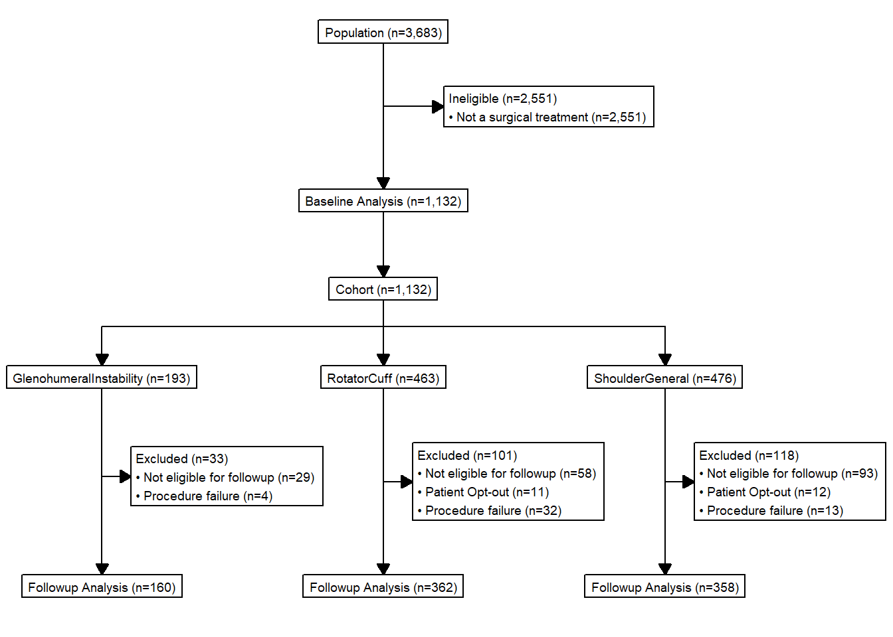
PRULO_Governance
1 Preamble
The following analysis is a report on the activity, quality and data contained in the PRULO registry.
Analysis packages were loaded initially into the R environment.
Access to the PRULO datasets was pre-authorised.
A function was generated to retrieve files using the googledrive package, to call on later in the analysis for processing data imports.
Data was retrieved from live database tables. Source files were specified and stored as global variables to call on in further functions.
A static registry snapshot was retrieved and formatted based on the fixed date of preparation of the snapshot (31-Mar-2025).
2 Context
PRULO (Patient Registry of Upper Limb Outcomes) is a clinical quality registry supporting the practices of two surgeons in Geelong, Victoria. It has been in operation since June 2020 and has three designed cohorts - Rotator Cuff; Glenohumeral Instability and a General cohort for all other shoulder pathology.
3 Recruitment Flow by Region
Flowcharts as per STROBE (Vandenbroucke et al. 2007) and RECORD (Benchimol et al. 2015) guidelines were generated for treatments enrolled into the Registry. Followup was set to eligibility at 12months.
Cumulative recruitment over time was plotted from Registry inception to the present.
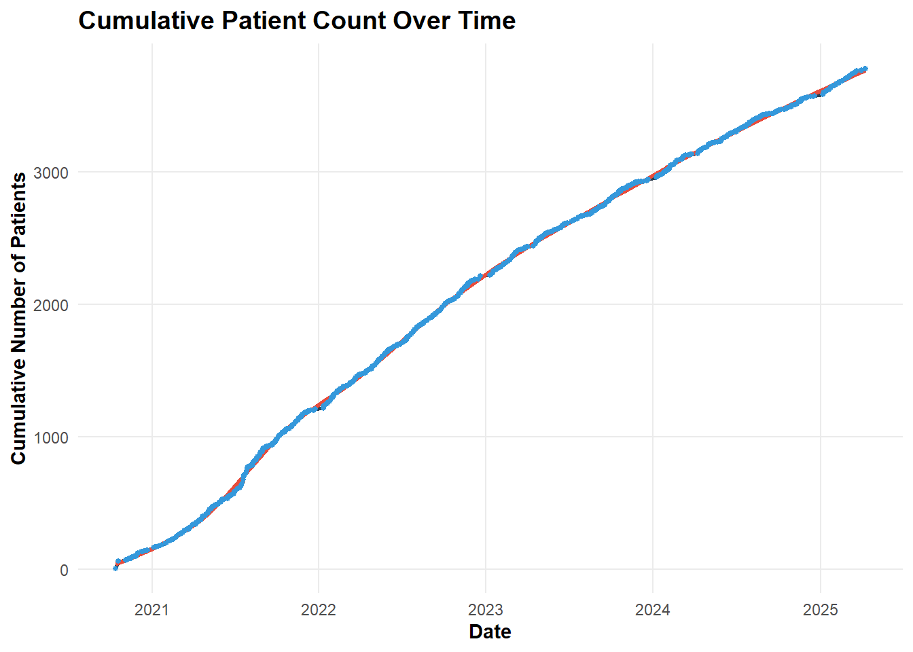
4 Missingness and Compliance
4.1 Baseline and Intraoperative
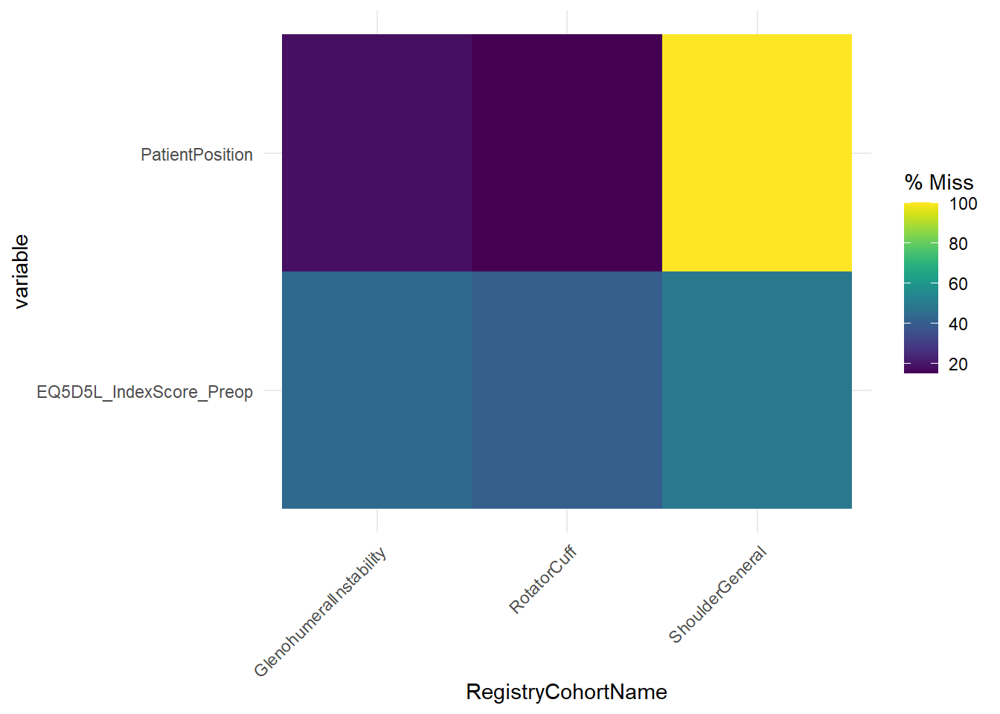
Missingness for baseline PROMs (represented by EQ5D) and intraoperative data is captured in Figure 3. Intraoperative data was captured slightly differently between cohorts, so multiple fields have been utilised to illustrate intraoperative capture across cohorts.
Overall, there are variable response rates for baseline scores across cohorts. This may reflect variable engagement during consultant clinics. We have also identified a system issue that is impeding scores from being sent to patients that are being re-categorised from one cohort to another. This is predominantly affecting cases that have limited information on their referral and are subsequently moved from the General cohort.
4.2 Patient-reported Outcomes by TimePoint
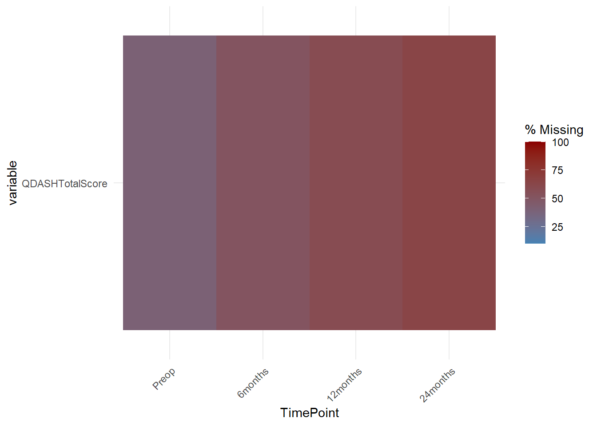
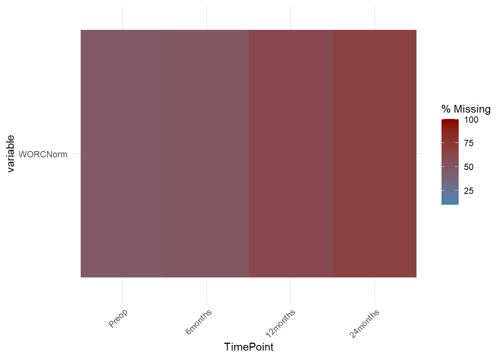
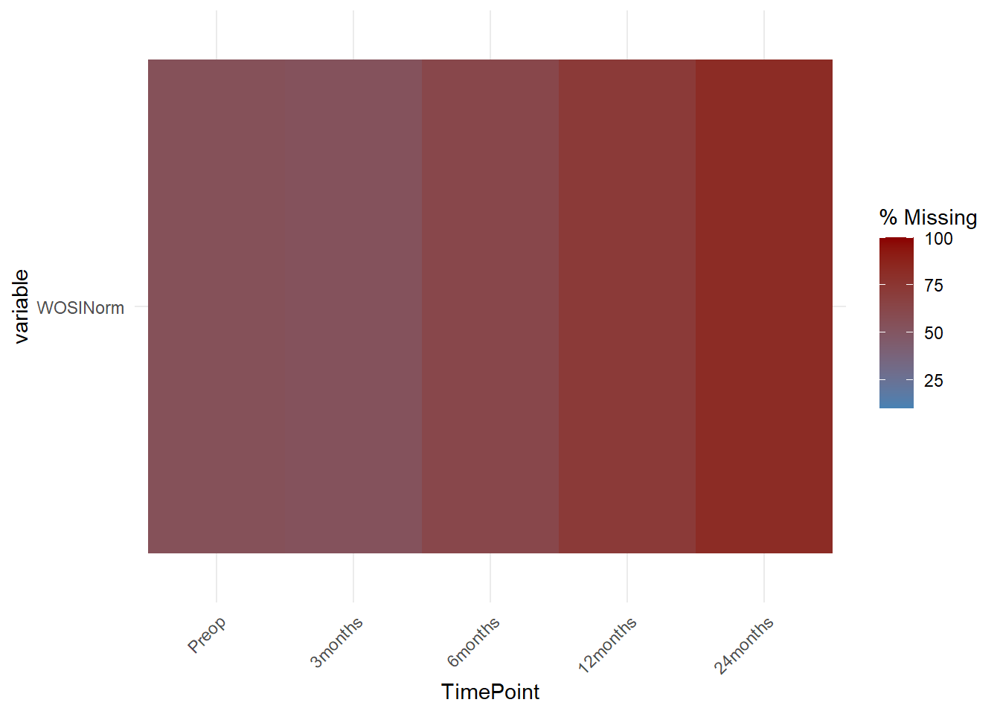
The cumulative results of the Registry illustrate difficulty in engaging patients beyond short term followup.
4.3 Baseline by Year
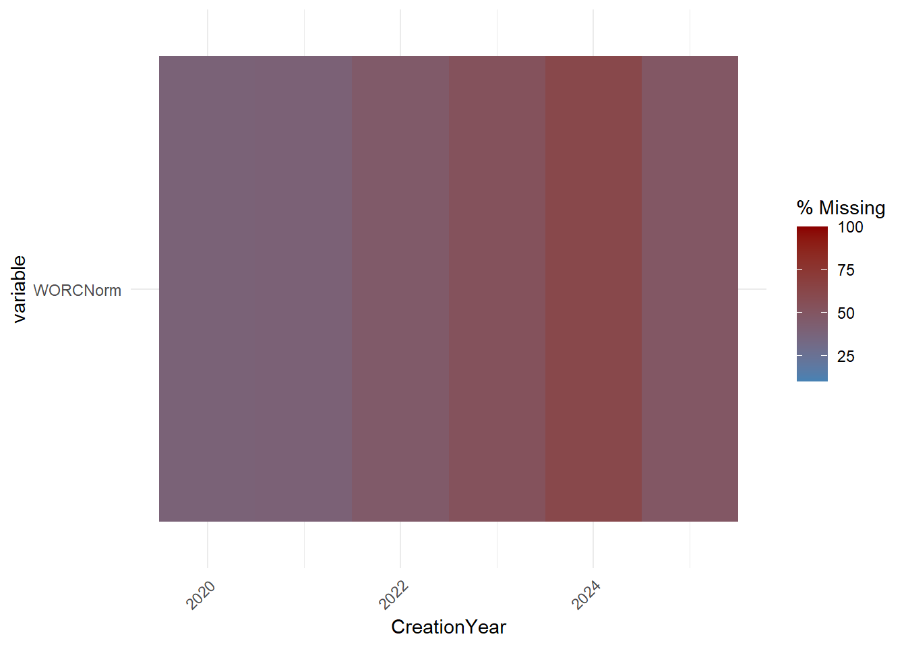
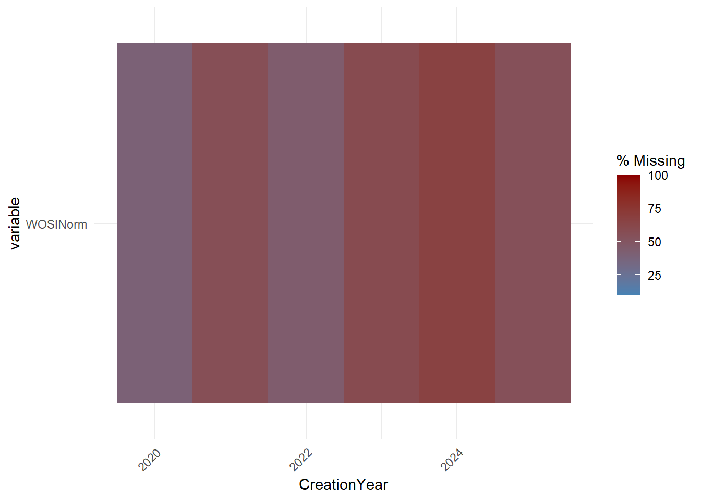
The results displayed in Figure 8 helped to identify the system issue preventing cohort-specific scores being resent to cases that were transferred from one cohort to another. This has now been rectified and eligible cases have been resent links to complete the required questionnaires.
5 Cohort Analysis
The EQ5D is a general health questionnaire that is presented to all patients enrolled in the registry.
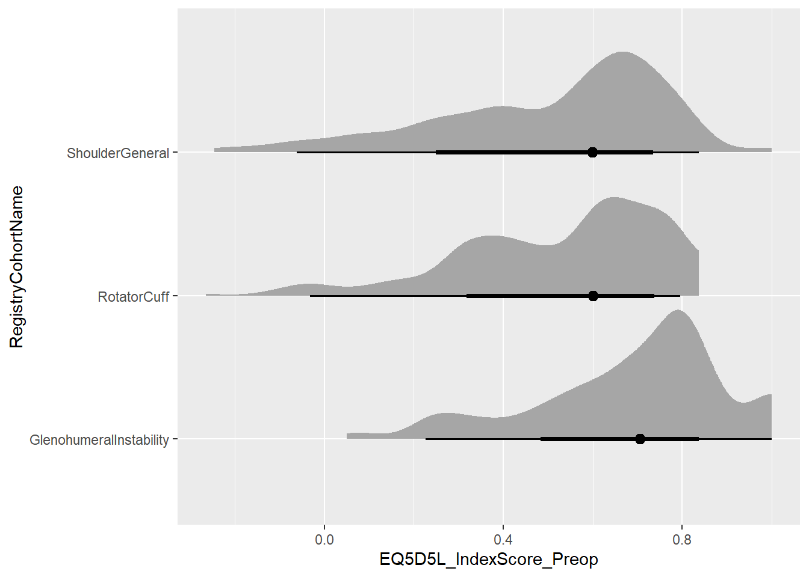
Between-cohort variability is observed for the Physical Component Score of the VR12, but not as pronounced for the Mental Component Score. Most notable is the high variation within all cohorts for both VR12 component scores.
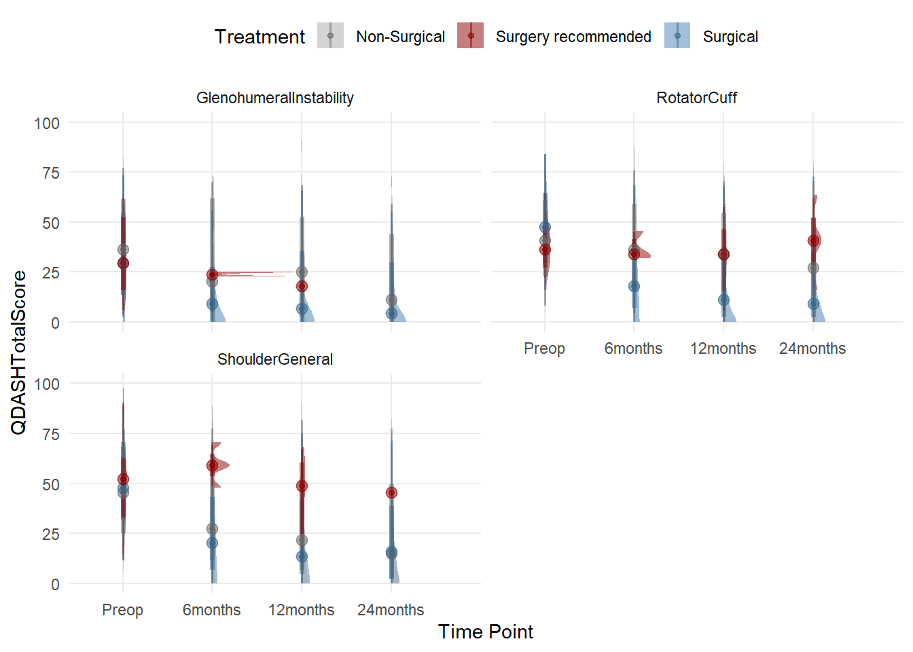
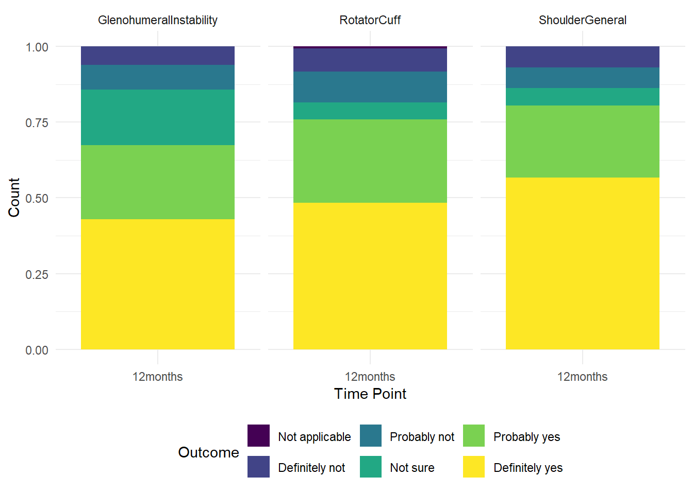
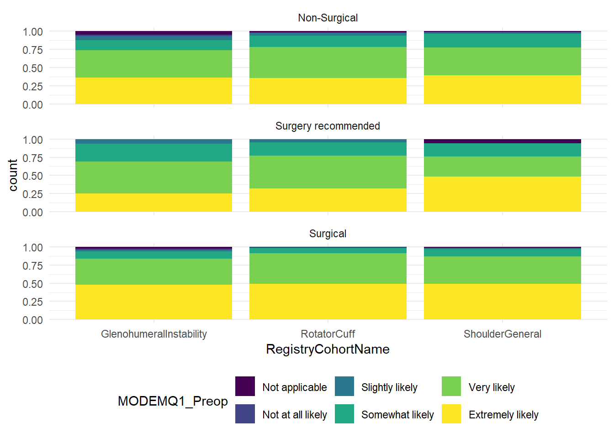
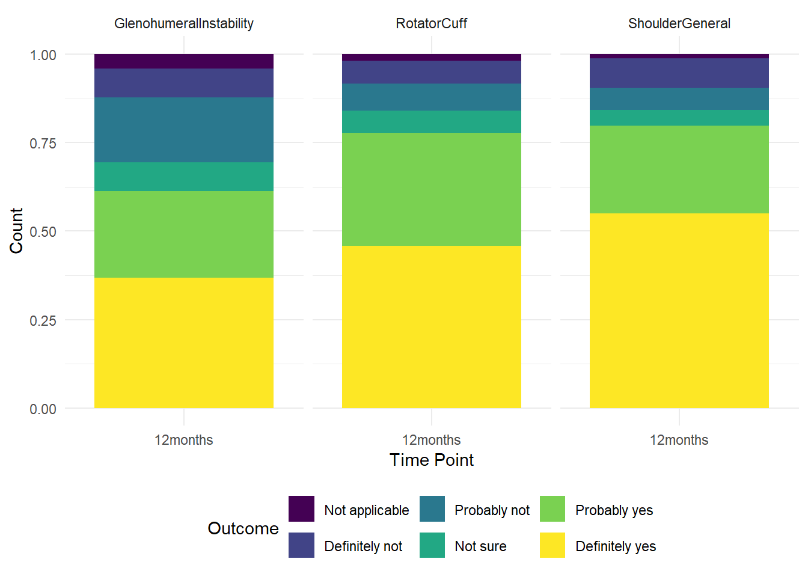
5.1 Rotator Cuff
| Characteristic | Non-Surgical N = 7151 |
Surgery recommended N = 371 |
Surgical N = 4631 |
|---|---|---|---|
| TreatmentType | |||
| Primary | 687 (96%) | 33 (89%) | 440 (95%) |
| Revision Else | 10 (1.4%) | 2 (5.4%) | 7 (1.5%) |
| Revision Own | 18 (2.5%) | 2 (5.4%) | 16 (3.5%) |
| TreatmentStatus | |||
| Failed | 65 (9.1%) | 2 (5.4%) | 32 (6.9%) |
| No further followup | 9 (1.3%) | 0 (0%) | 11 (2.4%) |
| Ongoing | 641 (90%) | 35 (95%) | 411 (89%) |
| Pending: IC | 0 (0%) | 0 (0%) | 1 (0.2%) |
| Pending: Treatment | 0 (0%) | 0 (0%) | 8 (1.7%) |
| DateInitialExamination | 2017-08-23 - 2025-03-06 | 2020-09-08 - 2025-03-06 | 2015-05-14 - 2025-02-24 |
| AgeAtInitialExam | 64 (54, 72) | 57 (49, 63) | 60 (53, 66) |
| Sex | |||
| F | 303 (42%) | 13 (35%) | 137 (30%) |
| M | 411 (57%) | 24 (65%) | 326 (70%) |
| N | 1 (0.1%) | 0 (0%) | 0 (0%) |
| EducationLevel_Preop | |||
| Post-secondary trade certificate or diploma | 131 (31%) | 10 (45%) | 95 (35%) |
| Postgraduate degree | 57 (13%) | 1 (4.5%) | 40 (15%) |
| Secondary - Year 12 | 75 (18%) | 3 (14%) | 47 (17%) |
| Undergraduate degree | 54 (13%) | 3 (14%) | 37 (14%) |
| Up to Secondary Year 10 | 106 (25%) | 5 (23%) | 53 (19%) |
| DiagnosisPrimary | |||
| M25.51 Pain in shoulder | 44 (6.2%) | 2 (5.4%) | 3 (0.6%) |
| M75.1 Rotator cuff syndrome; Rotator cuff or supraspinatus tear or rupture (complete)(incomplete), not specified as traumatic | 367 (51%) | 25 (68%) | 284 (61%) |
| M75.2 Bicipital tendinitis | 8 (1.1%) | 0 (0%) | 6 (1.3%) |
| M75.3 Calcific tendinitis of shoulder | 39 (5.5%) | 1 (2.7%) | 21 (4.5%) |
| M75.4 Impingement syndrome of shoulder | 23 (3.2%) | 0 (0%) | 10 (2.2%) |
| S43.43 Sprain and strain of Rotator cuff capsule | 99 (14%) | 2 (5.4%) | 19 (4.1%) |
| S46.0 Injury of muscle(s) and tendon(s) of the rotator cuff of shoulder; traumatic tear | 94 (13%) | 6 (16%) | 106 (23%) |
| S46.1 Injury of muscle and tendon of long head of biceps | 41 (5.7%) | 1 (2.7%) | 14 (3.0%) |
| 1 n (%); Min - Max; Median (Q1, Q3) | |||
| Characteristic | N = 4631 |
|---|---|
| CuffStatus | |
| Degenerative | 2 (0.5%) |
| Full Tear | 298 (76%) |
| Other | 11 (2.8%) |
| Partial Tear | 59 (15%) |
| Tendinopathy | 24 (6.1%) |
| CuffTearSizeML | 16 (12, 25) |
| CuffTearSizeAP | 20 (14, 30) |
| CuffTearPattern | |
| Crescent | 149 (42%) |
| L | 66 (18%) |
| Partial - concealed | 2 (0.6%) |
| Partial articular side | 30 (8.4%) |
| Partial bursal side | 18 (5.0%) |
| Reverse L | 39 (11%) |
| U | 51 (14%) |
| V | 2 (0.6%) |
| CuffTendonDelaminated | 206 (52%) |
| CuffTendonsInvolved | |
| Infraspinatus | 53 (13%) |
| Infraspinatus; Subscapularis | 26 (6.6%) |
| Infraspinatus; Teres Minor | 1 (0.3%) |
| Infraspinatus; Teres Minor; Subscapularis | 3 (0.8%) |
| No other tendon involved | 219 (56%) |
| Subscapularis | 62 (16%) |
| Subscapularis (isolated) | 30 (7.6%) |
| CuffCondition | |
| 0 | 213 (54%) |
| 1 | 110 (28%) |
| 2 | 46 (12%) |
| 3 | 17 (4.3%) |
| 4 | 8 (2.0%) |
| ArthroscopicApproach | 351 (89%) |
| AnchorFixation | |
| Knot | 199 (65%) |
| Knotless | 108 (35%) |
| CuffRepairTension | |
| High | 70 (23%) |
| Low | 238 (77%) |
| CuffRepairQuality | |
| Advancement | 34 (11%) |
| Anatomic | 268 (87%) |
| Partial | 6 (1.9%) |
| RepairType | |
| Double | 271 (88%) |
| Single | 36 (12%) |
| CuffTendonsTreated | |
| Infraspinatus | 45 (15%) |
| Infraspinatus; Subscapularis | 12 (3.9%) |
| Infraspinatus; Teres Minor | 2 (0.6%) |
| Infraspinatus; Teres Minor; Subscapularis | 2 (0.6%) |
| None | 172 (56%) |
| Subscapularis | 47 (15%) |
| Subscapularis (isolated) | 28 (9.1%) |
| CuffRepair | 308 (78%) |
| 1 n (%); Median (Q1, Q3) | |
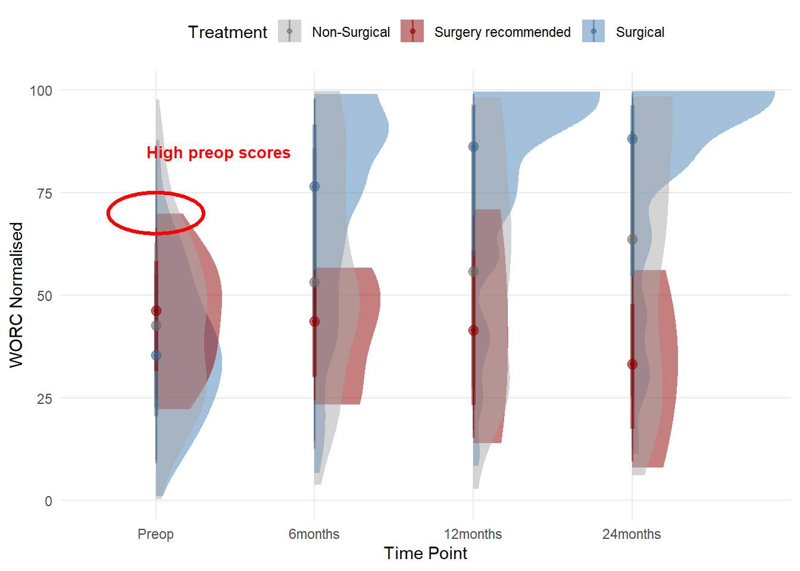
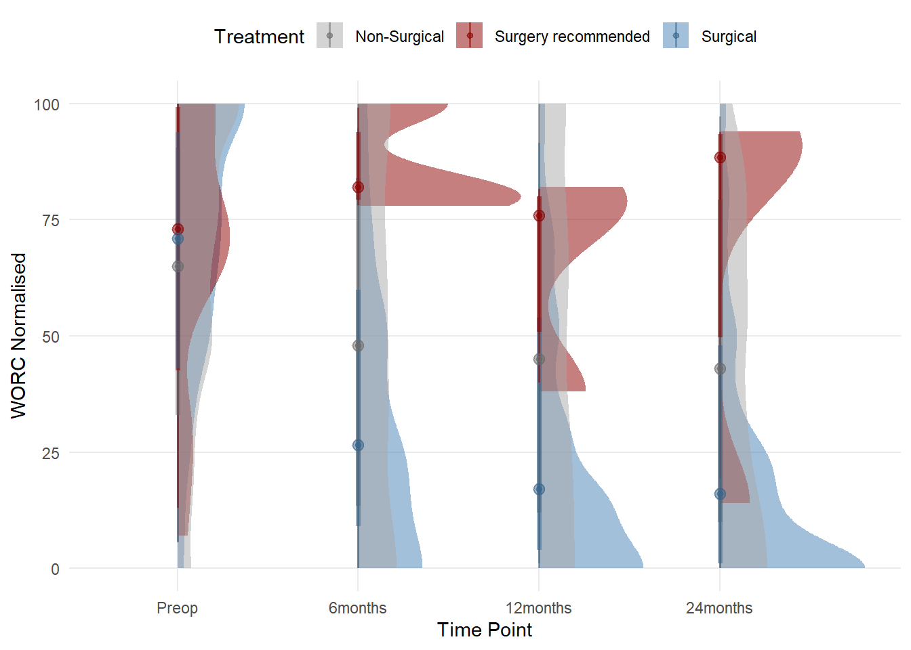
Assessment of the Rotator Cuff cohort reveals that some patients enrolled in the cohort are scoring high on the KOOS JR preoperatively, intraoperative data requires backfilling and that there may be sufficient variation in surgical technique to warrant further investigation (e.g. patellar resurfacing, tourniquet use, soft tissue management).
5.2 Glenohumeral Instability
| Characteristic | Non-Surgical N = 1741 |
Surgery recommended N = 221 |
Surgical N = 1931 |
|---|---|---|---|
| TreatmentType | |||
| Primary | 165 (95%) | 21 (95%) | 184 (95%) |
| Revision Else | 5 (2.9%) | 1 (4.5%) | 5 (2.6%) |
| Revision Own | 4 (2.3%) | 0 (0%) | 4 (2.1%) |
| TreatmentStatus | |||
| Failed | 20 (11%) | 3 (14%) | 4 (2.1%) |
| No further followup | 4 (2.3%) | 1 (4.5%) | 0 (0%) |
| Ongoing | 150 (86%) | 18 (82%) | 185 (96%) |
| Pending: Treatment | 0 (0%) | 0 (0%) | 4 (2.1%) |
| DateInitialExamination | 2019-08-01 - 2025-03-06 | 2021-10-13 - 2025-02-27 | 2015-03-03 - 2025-02-04 |
| AgeAtInitialExam | 36 (27, 53) | 30 (25, 33) | 25 (20, 37) |
| Sex | |||
| F | 50 (29%) | 2 (9.1%) | 44 (23%) |
| M | 124 (71%) | 20 (91%) | 149 (77%) |
| EducationLevel_Preop | |||
| Post-secondary trade certificate or diploma | 32 (31%) | 5 (31%) | 27 (25%) |
| Postgraduate degree | 16 (16%) | 1 (6.3%) | 10 (9.2%) |
| Secondary - Year 12 | 21 (20%) | 4 (25%) | 33 (30%) |
| Undergraduate degree | 21 (20%) | 5 (31%) | 22 (20%) |
| Up to Secondary Year 10 | 13 (13%) | 1 (6.3%) | 17 (16%) |
| DiagnosisPrimary | |||
| M24.21 Glenohumeral instability secondary to old ligament injury; Ligamentous laxity not otherwise specified | 5 (2.9%) | 0 (0%) | 5 (2.6%) |
| M24.4 Recurrent dislocation and subluxation of joint | 20 (11%) | 6 (27%) | 30 (16%) |
| M24.91 Glenohumeral derangement, unspecified | 6 (3.4%) | 0 (0%) | 1 (0.5%) |
| M25.31 Other instability of Glenohumeral joint | 31 (18%) | 2 (9.1%) | 33 (17%) |
| S42.14 Fracture of glenoid cavity of scapula | 1 (0.6%) | 0 (0%) | 3 (1.6%) |
| S43.0 Dislocation of [glenohumeral] joint | 77 (44%) | 12 (55%) | 55 (28%) |
| S43.42 Injury of labrum of the shoulder joint | 32 (18%) | 2 (9.1%) | 66 (34%) |
| T84.6 - Infection and inflammatory reaction due to internal fixation device | 2 (1.1%) | 0 (0%) | 0 (0%) |
| 1 n (%); Min - Max; Median (Q1, Q3) | |||
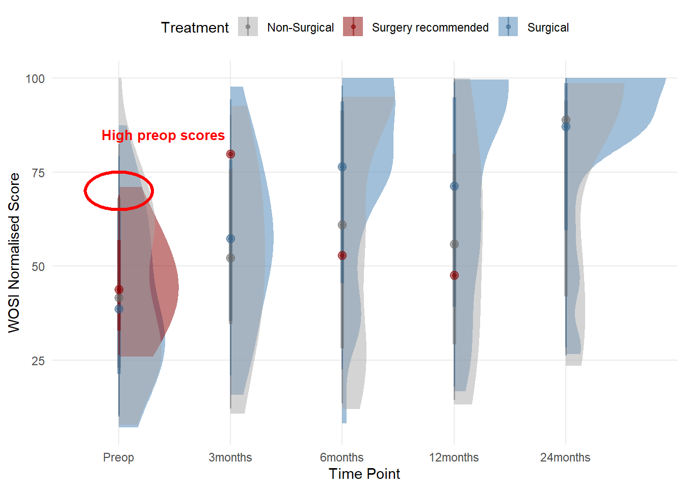
Overall, the Glenohumeral Instability cohort mean WOSI score does not reach the reported patient acceptable symptom state (~ 80) on average at up to 2 years followup. Considering the missingness patterns in the data, this could be attributed to patients self-selecting into responding to PROMs.
6 Interpretation
7 Recommendations
Benchimol, Eric I., Liam Smeeth, Astrid Guttmann, Katie Harron, David Moher, Irene Petersen, Henrik T. Sørensen, Erik von Elm, and Sinéad M. Langan. 2015. “The REporting of Studies Conducted Using Observational Routinely-Collected Health Data (RECORD) Statement.” PLOS Medicine 12 (10): e1001885. https://doi.org/10.1371/journal.pmed.1001885.
Vandenbroucke, Jan P, Erik von Elm, Douglas G Altman, Peter C Gøtzsche, Cynthia D Mulrow, Stuart J Pocock, Charles Poole, James J Schlesselman, and Matthias Egger. 2007. “Strengthening the Reporting of Observational Studies in Epidemiology (STROBE): Explanation and Elaboration.” PLoS Medicine 4 (10): e297. https://doi.org/10.1371/journal.pmed.0040297.